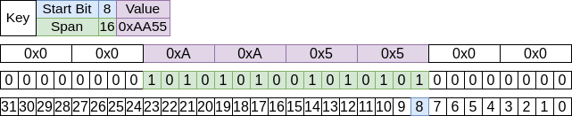
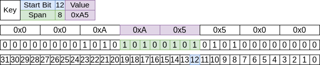

BitField<T>
T = Integer (T)ype where expected values are uint8_t, uint16_t, uint32_t, or uint64_t
Overview
BitField is designed as a building block for naming bits within a register. BitField ensures that only the specific bits within the register you’re interested in are modified or read. This should reduce the number of bugs related to bit manipulation. Another goal of BitField is to create derived classes that have descriptive names to reduce the number of times you have to reference a datasheet. ARM Cortex-M0 PSR and BME280 config are two examples of how you might use a BitField. Color uses BitField to represent RGB(A) values in a single value.
BitField8
This is an alias for a BitField of 8 bits
Unresolved include directive in modules/ROOT/pages/bit_field.adoc - include::example$include/EDF/BitField.hpp[]BitField16
This is an alias for a BitField of 16 bits
Unresolved include directive in modules/ROOT/pages/bit_field.adoc - include::example$include/EDF/BitField.hpp[]Initialization
If using a default constructor the initial value will be 0.
Unresolved include directive in modules/ROOT/pages/bit_field.adoc - include::example$examples/EDF/BitField/main.cpp[]Unresolved include directive in modules/ROOT/pages/bit_field.adoc - include::example$examples/EDF/BitField/main.cpp[]Operations
set( startBit, span, value )
Assigns value to the BitField at startBit for span number of bits.
Unresolved include directive in modules/ROOT/pages/bit_field.adoc - include::example$examples/EDF/BitField/main.cpp[]
Unresolved include directive in modules/ROOT/pages/bit_field.adoc - include::example$examples/EDF/BitField/main.cpp[]
get( startBit, span )
Reads the value from the BitField at startBit for span number of bits.
Unresolved include directive in modules/ROOT/pages/bit_field.adoc - include::example$examples/EDF/BitField/main.cpp[]
Unresolved include directive in modules/ROOT/pages/bit_field.adoc - include::example$examples/EDF/BitField/main.cpp[]
Unresolved include directive in modules/ROOT/pages/bit_field.adoc - include::example$examples/EDF/BitField/main.cpp[]
ARM Cortex-M0 PSR Registers
Unresolved include directive in modules/ROOT/pages/bit_field.adoc - include::example$examples/EDF/BitField/main.cpp[]BME280 Config register
Unresolved include directive in modules/ROOT/pages/bit_field.adoc - include::example$examples/EDF/BitField/main.cpp[]